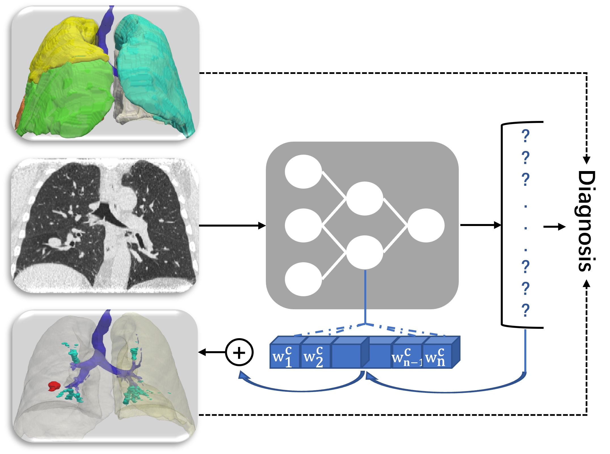

|
|
NODEO: A Neural Ordinary Differential Equation Based Optimization Framework for
Deformable Image Registration
Yifan Wu*, Tom Z Jiahao*, Jiancong Wang, Paul A Yushkevich, M Ani Hsieh, James C
Gee
CVPR, 2022
Project Page/
Paper/
Supplementary
We model each voxel as a moving particle and consider the set of all voxels in a 3D image
as a high-dimensional dynamical system whose trajectory determines the targeted deformation
field.
|

Interpretable Identification of Interstitial Lung Disease (ILD) Associated Findings
from CT
Yifan Wu, Jiancong Wang, William D. Lindsay, Tarmily Wen, Jianbo Shi, and James C.
Gee
MICCAI, 2020
Paper
Formulated the radiologic ILD findings identification as a multi-class classification problem
given the raw thoracic CT dataset.
|
|
From Image to Video Face Inpainting: Spatial-Temporal Nested GAN (STN-GAN) for
Usability Recovery
Yifan Wu, Vivek Singh, Ankur Kapoor
WACV, 2020
Paper/
Video Result
We propose to use constrained inpainting methods to recover usability of corrupted images, which
are masked for privacy protection
but complete images are required for further algorithm development.
|
|
|
Towards Generating Personalized Volumetric Phantom from Patient's Surface Geometry
Yifan Wu, Vivek Singh, Brian Teixeira, Kai Ma, Birgi Tamersoy, Andreas Krauss, and
Terrence Chen
MICCAI, 2019
Paper
This paper presents a method to generate a volumetric phantom with internal anatomical
structures from the patient?s skin surface geometry.
|
|
Privacy-Protective-GAN for Face De-identification
Yifan Wu, Fan Ynag, and Haibin Ling
Arxiv, 2018
Paper
Defined the face-identification task by establishing an effective de-identification measurement:
achieve privacy protection
simultaneously preserving data utility. Proposed an end-to-end trainable framework to synthesize
de-identified facial images.
|
{kind=link}